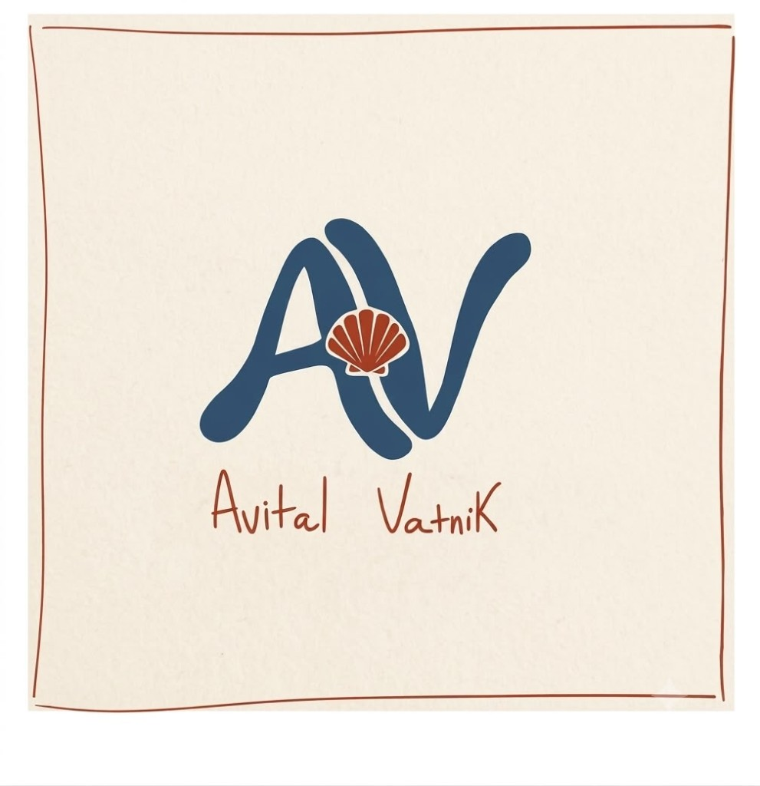
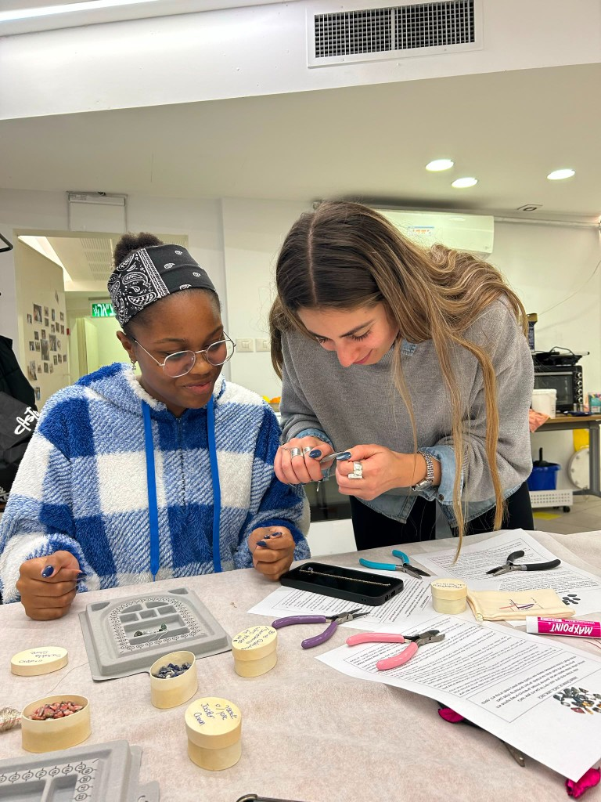
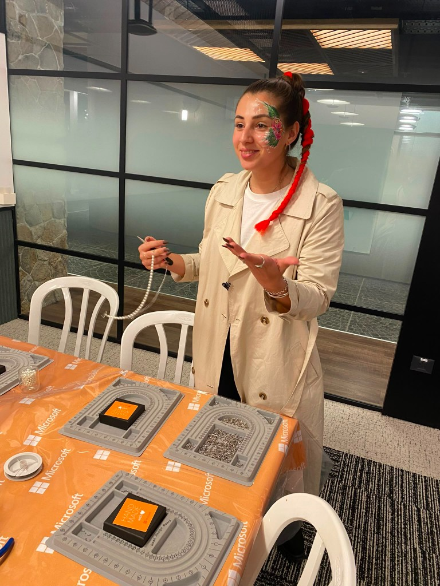
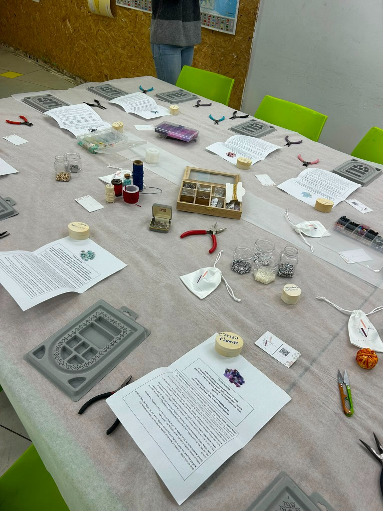
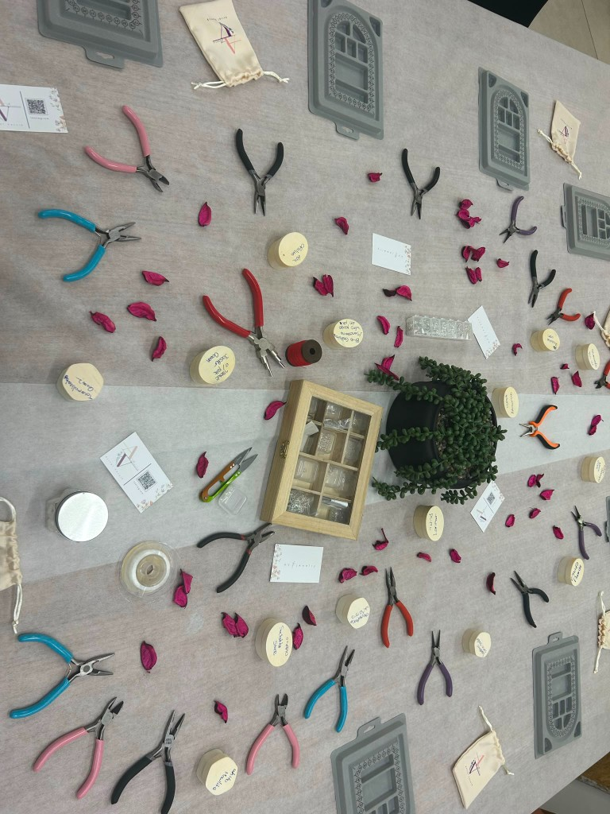
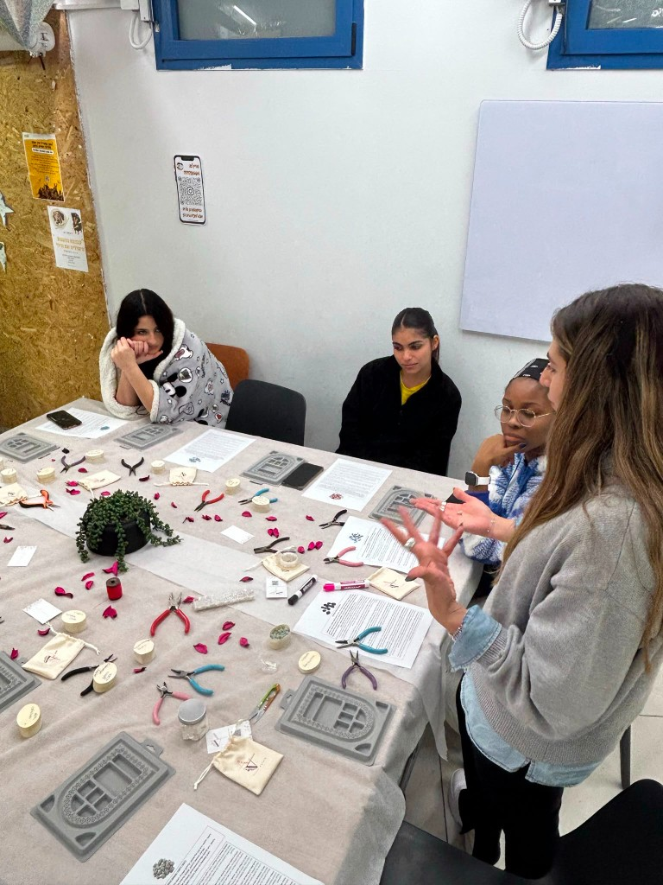
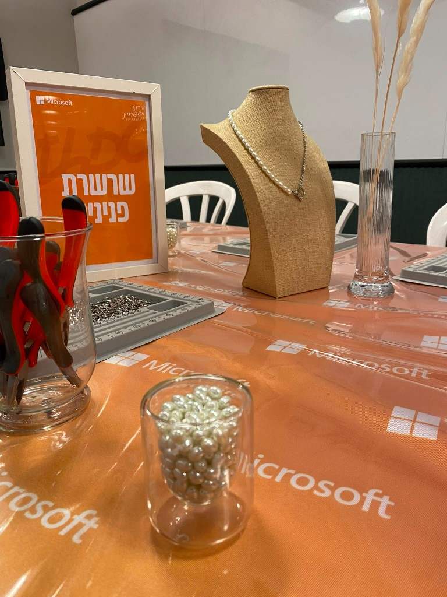

משך זמן הסדנה
כ-שעתיים של חוויה רצופה. במידת הצורך אני נשארת יותר לפי קצב הילדים והמשתתפים.
סדנאות אבני חן ותכשיטים
עם כוונה ומשמעות
חוויה מיוחדת ומקרבת
המשלבת אבני חן טבעיות,
בחירה אישית,
הקשבה וערך רגשי עמוק שפותח את הלב.



ברוב סדנאות היצירה, המשתתפים מכינים פריט יפה ויוצאים איתו הביתה. בסדנאות שלי, היצירה היא רק השער לחוויה רגשית עמוקה יותר.


ארבעת שלבי הסדנה:

הקדמה מרתקת על עולם אבני החן, התכונות, האנרגיות והמשמעויות המיוחדות של כל אבן.
כל משתתף בוחר את האבן שמדברת אליו ומכניס כוונה אישית לחייו (אומץ, שלווה, ביטחון).
עבודה מעשית עם מגוון חומרים עשיר לעיצוב התכשיט. קבלת ידע ליצור אחריך גם לבד.
אריזה ממותגת יפה, מתנה מרגשת שנשארת ותוסיפה משמעות.
תכונות ואיכויות לחיים
אהבה וקבלה עצמית
מביאה עמה רכות, פתיחת הלב וחמלה למערכות יחסים ולאהבה עצמית.
רוגע ושלווה פנימית
מסייעת בהרגעת המחשבות, הפחתת מתחים וחיבור לשקט פנימי.
אומץ וביטחון
מחזקת את כוח הרצון, הביטחון העצמי והיכולת לעמוד מול אתגרים.
שמחה ושפע
אבן מלאת אור ואנרגיה חיובית, המעודדת יצירתיות ושמחת חיים.
איזון והרמוניה
מעניקה תחושת יציבות, מזל טוב וחיבור לטבע ולאיזון הפנימי.
מיקוד וביטוי עצמי
מעודדת תקשורת כנה, הקשבה לקול הפנימי ופיתוח חשיבה צלולה.
מגוון אירועים ומסגרות
חגיגה צבעונית, מעצימה ומלאת עניין. הילדים חוגגים יחד ויוצאים עם מזכרת יוקרתית ששמורה איתם.
סדנאות גיבוש חווייתיות לחברות וארגונים, המעניקות זמן איכות ערכי ומשותף להורים וילדיהם.
מסיבות רווקות, ימי הולדת וערבי נשים עם חומרי כסף 925 וציפוי זהב ברמה הגבוהה ביותר.
עבודה מעצימה עם צוותים חינוכיים ונוער בסיכון, המעניקה ביטוי עצמי וחיזוק מעטפת התמיכה.
קולקציית פרימיום
עבור ערבי גיבוש לנשים, מסיבות רווקות ואירועים מיוחדים, אנו מציעים סדנת פרימיום ייחודית.

אביטל ואטניק
שלום, אני אביטל. הזיקה שלי לעולם התכשיטים והאסתטיקה הטבעית תמיד הלכה יד ביד עם האהבה שלי לאנשים ולחיבור אנושי פתוח.
כשאני מעבירה סדנה, המטרה שלי היא לא רק ללמד טכניקה – אלא ליצור מרחב בטוח, מקרב ומעצים שבו כל משתתף וילד מרגישים שרואים אותם.
הניסיון שלי בעבודה עם ילדים, הורים ונוער בסיכון לימד אותי שכשנותנים לאדם לבחור בעצמו את המשמעות שלו – היצירה הופכת לכוח מניע.
אסתטיקה טבעית
כל תכשיט שנוצר בסדנה לא יוצא בשקית פלסטיק פשוטה, אלא נעטף באהבה עם המיתוג הייחודי שלנו:
המלצות
"הגעת ליום ההולדת של רוני בת ה-10 והופכת את הסלון לקסם! הילדות היו מרותקות, השיתוף על אבני החן היה מרגש במיוחד, והבנות לא מורידות את השרשראות עד היום"
— מיכל שפירא, אמא של רוני"הזמנו את אביטל לסדנת הורים וילדים בחברת ההייטק שלנו. זו הייתה הפעילות הכי מוצלחת ומושקעת שהייתה לנו השנה! הארגון, המיתוג והגישה לילדים – 10/10"
— שרון לוי, מנהלת HR"אביטל העבירה סדנה לנוער בסיכון במסגרת שלנו. הסבלנות, ההקשבה והדרך שבה גרמה לכל אחד לבחור את האבן שלו היו פשוט מעוררות השראה"
— יעל דהן, רכזת חינוכיתכל מה שחשוב לדעת
כ-שעתיים של חוויה רצופה. במידת הצורך אני נשארת יותר לפי קצב הילדים והמשתתפים.
הסדנה מותאמת אישית: ישנן חבילות לפי כמות משתתפים (עד 10 משתתפים, עד 15, וקבוצות גדולות).
אני מגיעה עד אליכם בכל חלקי הארץ עם כל ציוד היצירה, החומרים, אבני החן והאריזות.
הציוד והחומרים מותאמים בדיוק לפי גיל המשתתפים – מילדים בגילאי יסודי ועד למבוגרים.
השאירו פרטים
מזמינה אתכם להעניק לאורחים שלכם חוויה מלאת יופי, משמעות, צבע ואנרגיה טובה.
אביטל ואטניק | סדנאות אבני חן ותכשיטים